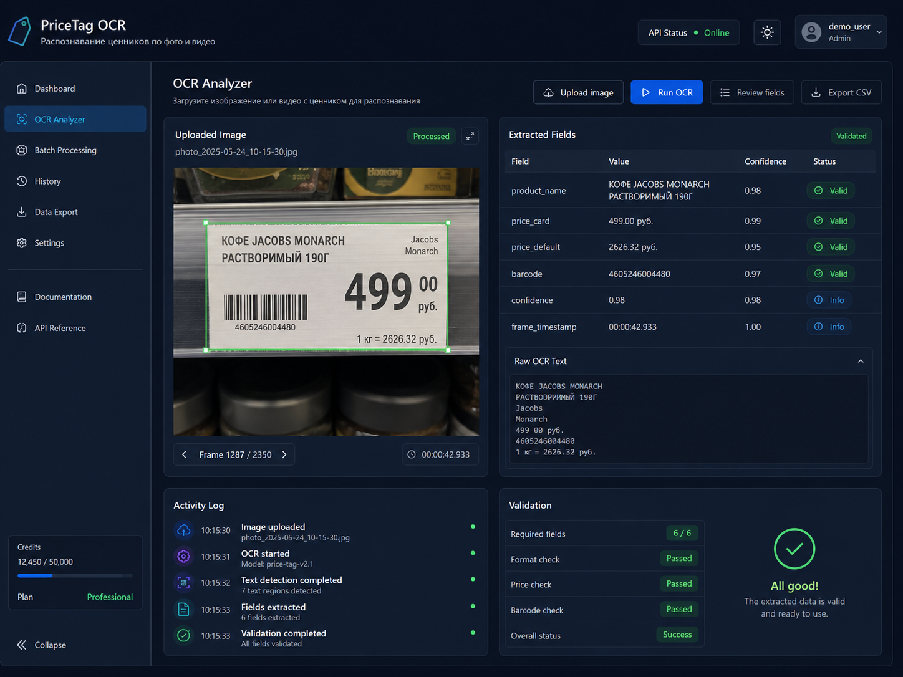

CV / OCR / Retail
PriceTag OCR
Демо-система извлекает информацию с retail-ценников: цену, штрихкод, поля товара и итоговый CSV для проверки.
Задача: ускорить обработку ценников и снизить ручной ввод.
AI-часть: детекция, OCR, barcode-first логика, валидация полей.
AI-часть: детекция, OCR, barcode-first логика, валидация полей.